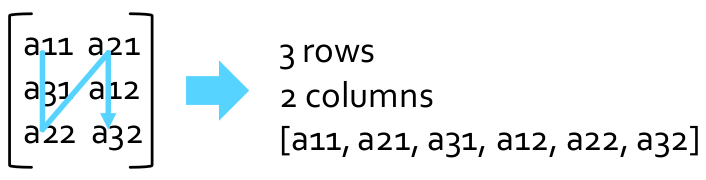

19 Spark MLlib
Spark MLlib is the Spark component providing the machine learning/data mining algorithms
- Pre-processing techniques
- Classification (supervised learning)
- Clustering (unsupervised learning)
- Itemset mining
MLlib APIs are divided into two packages:
pyspark.mllib: It contains the original APIs built on top of RDDs. This version of the APIs is in maintenance mode and will be probably deprecated in the next releases of Spark.pyspark.ml: It provides higher-level API built on top of DataFrames (i.e, Dataset<Row>) for constructing ML pipelines. It is recommended because the DataFrame-based API is more versatile and flexible, also providing the pipeline concept. This is the one explained in this course.
Data types
Spark MLlib is based on a set of basic local and distributed data types:
- Local vector
- Local matrix
- Distributed matrix
- …
DataFrames for ML-based applications contain objects based on these basic data types.
Local vectors
Local pyspark.ml.linalg.Vector objects in MLlib are used to store vectors (in dense and sparse representations) of double values. The MLlib algorithms work on vectors of doubles, used to represent the input records/data (one vector for each input record). Non double attributes/values must be mapped to double values before applying MLlib algorithms.
Consider the vector of doubles [1.0, 0.0, 3.0]. It can be represented
- In dense format as
[1.0, 0.0, 3.0] - In sparse format as
(3, [0, 2], [1.0, 3.0]), where- 3 is the size of the vector
- The array
[0, 2]contains the indexes of the non-zero cells - The array
[1.0, 3.0]contains the values of the non-zero cells
The following code shows how dense and sparse vectors can be created in Spark
from pyspark.ml.linalg import Vectors
## Create a dense vector [1.0, 0.0, 3.0]
dv = Vectors.dense([1.0, 0.0, 3.0])
## Create a sparse vector [1.0, 0.0, 3.0] by specifying
## its indices and values corresponding to non-zero entries
## by means of a dictionary
sv = Vectors.sparse(3, { 0:1.0, 2:3.0 })In the sparse vector
3 |
Size of the vector |
2:3.0 |
Index and value of a non-empty cell |
{ 0:1.0, 2:3.0 } |
Dictionary of \(index:value\) pairs |
Local matrices
Local pyspark.ml.linalg.Matrix objects in MLlib are used to store matrices (in dense and sparse representations) of double values. The column-major order is used to store the content of the matrix in a linear way.

The following code shows how dense and sparse matrices can be created in Spark.
from pyspark.ml.linalg import Matrices
## Create a dense matrix with two rows and three columns
## 3.0 0.0 0.0
## 1.0 1.5 2.0
dm =Matrices.dense(2,3,[3.0, 1.0, 0.0, 1.5, 0.0, 2.0])
## Create a sparse version of the same matrix
sm = Matrices.sparse(2,3, [0, 2, 3, 4], [0, 1, 1, 1] , [3, 1, 1.5, 2])In the dense matrix vector
2 |
Number of rows |
3 |
Number of columns |
[3.0, 1.0, 0.0, 1.5, 0.0, 2.0] |
Values in column/major order |
In the sparse matrix vector
2 |
Number of rows |
3 |
Number of columns |
[0, 2, 3, 4] |
One element per column that encodes the offset in the array of non-zero values where the values of the given column start. The last element is the number of non-zero values. |
[0, 1, 1, 1] |
Row index of each non-zero value |
[3, 1, 1.5, 2] |
Array of non-zero values of the represented matrix |
Main concepts
Spark MLlib uses DataFrames as input data: the input of the MLlib algorithms are structured data (i.e., tables), and all input data must be represented by means of tables before applying the MLlib algorithms; also document collections must be transformed in a tabular format before applying the MLlib algorithms.
The DataFrames used and created by the MLlib algorithms are characterized by several columns, and each column is associated with a different role/meaning
- label: the target of a classification/regression analysis;
- features: the vector containing the values of the attributes/features of the input record/data points;
- text: the original text of a document before being transformed in a tabular format;
- prediction: the predicted value of a classification/regression analysis.
Transformer
A Transformer is an ML algorithm/procedure that transforms one DataFrame into another DataFrame by means of the method transform(inputDataFrame).
A feature transformer might take a DataFrame, read a column (e.g., text), map it into a new column (e.g., feature vectors), and output a new DataFrame with the mapped column appended.
A classification model is a Transformer that can be applied on a DataFrame with features and transforms it into a DataFrame with also the prediction column.
Estimator
An Estimator is an ML algorithm/procedure that is fit on an input (training) DataFrame to produce a Transformer: each Estimator implements a fit() method, which accepts a DataFrame and produces a Model of type Transformer.
An Estimator abstracts the concept of a learning algorithm or any algorithm that fits/trains on an input dataset and returns a model
The Logistic Regression classification algorithm is an Estimator: calling fit(input training DataFrame) on it a Logistic Regression Model is built, which is a Model/a Transformer.
Pipeline
A Pipeline chains multiple Transformers and Estimators together to specify a Machine learning/Data Mining workflow. In a pipeline, the output of a transformer/estimator is the input of the next one.
A simple text document processing workflow aiming at building a classification model includes several steps
- Split each document into a set of words;
- Convert each set of words into a numerical feature vector;
- Learn a prediction model using the feature vectors and the associated class labels.
Parameters
Transformers and Estimators share common APIs for specifying the values of their parameters.
In the new APIs of Spark MLlib the use of the pipeline approach is preferred/recommended. This approach is based on the following steps
- The set of Transformers and Estimators that are needed are instantiated;
- A pipeline object is created and the sequence of transformers and estimators associated with the pipeline are specified;
- The pipeline is executed and a model is trained;
- (optional) The model is applied on new data.
Data preprocessing
Input data must be preprocessed before applying machine learning and data mining algorithms
- To organize data in a format consistent with the one expected by the applied algorithms;
- To define good (predictive) features;
- To remove bias (e.g., normalization);
- To remove noise and missing values.
Extracting, transformings, and selecting features
MLlib provides a set of transformers than can be used to extract, transform and select features from DataFrames
- Feature Extractors (e.g., TF-IDF, Word2Vec)
- Feature Transformers (e.g., Tokenizer, StopWordsRemover, StringIndexer, IndexToString, OneHotEncoderEstimator, Normalizer)
- Feature Selectors (e.g., VectorSlicer)
See the up-to-date list here.
Feature transformations
Several algorithms are provided by MLlib to transform features. They are used to create new columns/features by combining or transforming other features It is possible to perform feature transformations and feature creations by using the standard methods for DataFrames and RDDs.
VectorAssembler
VectorAssembler (pyspark.ml.feature.VectorAssembler) is a transformer that combines a given list of columns into a single vector column. It is useful for combining features into a single feature vector before applying ML algorithms.
Given VectorAssembler(inputCols, outputCol)
inputCols: the list of original columns to include in the new column of typeVector. The following input column types are accepted- all numeric types, boolean type, and vector type
- Boolean values are mapped to 1 (True) and 0 (False)
outputCol: the name of the new output column
When the transform method of VectorAssembler is invoked on a DataFrame the returned DataFrame has a new column (outputCol): for each record, the value of the new column is the concatenation of the values of the input columns. It has also all the columns of the input DataFrame.
Consider an input DataFrame with three columns: create a new DataFrame with a new column containing the concatenation of “colB” and “colC” in a new vector column. Set the name of the new column to “features”.
Original DataFrame
| colA | colB | colC |
|---|---|---|
| \(1\) | \(4.5\) | True |
| \(2\) | \(0.6\) | True |
| \(3\) | \(1.5\) | False |
| \(4\) | \(12.1\) | True |
| \(5\) | \(0.0\) | True |
Transformed DataFrame
| colA | colB | colC | features | |
|---|---|---|---|---|
| \(1\) | \(4.5\) | True | \([4.5,1.0]\) | |
| \(2\) | \(0.6\) | True | \([0.6,1.0]\) | |
| \(3\) | \(1.5\) | False | \([1.5,0.0]\) | |
| \(4\) | \(12.1\) | True | \([12.1,1.0]\) | |
| \(5\) | \(0.0\) | True | \([0.0,1.0]\) |
Notice that columns of DataFrames can also be vectors.
from pyspark.mllib.linalg import Vectors
from pyspark.ml.feature import VectorAssembler
## input and output folders
inputPath = "data/exampleDataAssembler.csv“
## Create a DataFrame from the input data
inputDF = spark.read.load(
inputPath,
format="csv",
header=True,
inferSchema=True
)
## Create a VectorAssembler that combines columns colB and colC
## The new vetor column is called features
myVectorAssembler = VectorAssembler(
inputCols = ['colB', 'colC'],
outputCol = 'features'
)
## Apply myVectorAssembler on the input DataFrame
transformedDF = myVectorAssembler.transform(inputDF)Data Normalization
MLlib provides a set of normalization algorithms (called scalers)
- StandardScaler
- MinMaxScaler
- Normalizer
- MaxAbsScaler
StandardScaler
StandardScaler (pyspark.ml.feature.StandardScaler) is an Estimator that returns a Transformer (pyspark.ml.feature.StandardScalerModel). StandardScalerModel transforms a vector column of an input DataFrame normalizing each feature of the input vector column to have unit standard deviation and/or zero mean.
Given StandardScaler(inputCol, outputCol)
inputCol: the name of the input vector column (of doubles) to normalizeoutputCol: the name of the new output normalized vector column
Invoke the fit method of StandardScaler on the input DataFrame to infer a StandardScalerModel. The returned model is a Transformer.
Invoke the transform method of StandardScalerModel on the input DataFrame to create a new DataFrame that has a new column (outputCol): for each record, the value of the new column is the normalized version of the input vector column. It has also all the columns of the input DataFrame.
Consider an input DataFrame with four columns: create a new DataFrame with a new column containing the normalized version of the vector column features. Set the name of the new column to “scaledFeatures”.
Original DataFrame
| colA | colB | colC | features | |
|---|---|---|---|---|
| \(1\) | \(4.5\) | True | \([4.5,1.0]\) | |
| \(2\) | \(0.6\) | True | \([0.6,1.0]\) | |
| \(3\) | \(1.5\) | False | \([1.5,0.0]\) | |
| \(4\) | \(12.1\) | True | \([12.1,1.0]\) | |
| \(5\) | \(0.0\) | True | \([0.0,1.0]\) |
Transformed DataFrame
| colA | colB | colC | features | scaledFeatures | |
|---|---|---|---|---|---|
| \(1\) | \(4.5\) | True | \([4.5,1.0]\) | \([0.903,2.236]\) | |
| \(2\) | \(0.6\) | True | \([0.6,1.0]\) | \([0.120,2.236]\) | |
| \(3\) | \(1.5\) | False | \([1.5,0.0]\) | \([0.301,0.0]\) | |
| \(4\) | \(12.1\) | True | \([12.1,1.0]\) | \([2.428,2.236]\) | |
| \(5\) | \(0.0\) | True | \([0.0,1.0]\) | \([0.0,2.236]\) |
from pyspark.mllib.linalg import Vectors
from pyspark.ml.feature import VectorAssembler
from pyspark.ml.feature import StandardScaler
## input and output folders
inputPath = "data/exampleDataAssembler.csv“
## Create a DataFrame from the input data
inputDF = spark.read.load(
inputPath,
format="csv",
header=True,
inferSchema=True
)
## Create a VectorAssembler that combines columns colB and colC
## The new vetor column is called features
myVectorAssembler = VectorAssembler(
inputCols = ['colB', 'colC'],
outputCol = 'features'
)
## Apply myVectorAssembler on the input DataFrame
transformedDF = myVectorAssembler.transform(inputDF)
## Create a Standard Scaler to scale the content of features
myScaler = StandardScaler(
inputCol="features",
outputCol="scaledFeatures"
)
## Compute summary statistics by fitting the StandardScaler
## Before normalizing the content of the data we need to compute mean and
## standard deviation of the analyzed data
scalerModel = myScaler.fit(transformedDF)
## Apply myScaler on the input column features
scaledDF = scalerModel.transform(transformedDF)Categorical columns
Frequently the input data are characterized by categorical attributes (i.e., string columns), and the class label of the classification problem is a categorical attribute. The Spark MLlib classification and regression algorithms work only with numerical values, so categorical columns must be mapped to double values.
StringIndexer
A StringIndexer (pyspark.ml.feature.StringIndexer) is an Estimator that returns a Transformer of type pyspark.ml.feature.StringIndexerModel. StringIndexerModel encodes a string column of “labels” to a column of “label indices”: each distinct value of the input string column is mapped to an integer value in \([0, \textbf{number of distinct values})\).
StringIndexer(inputCol, outputCol)
inputCol: the name of the input string column to map to a set of integersoutputCol: the name of the new output column
Invoke the fit method of StringIndexer on the input DataFrame to infer a StringIndexerModel. The returned model is a Transformer.
Invoke the transform method of StringIndexerModel on the input DataFrame to create a new DataFrame that has a new column (outputCol): for each record, the value of the new column is the integer (casted to a double) associated with the value of the input string column. It has also all the columns of the input DataFrame.
Consider an input DataFrame with two columns: create a new DataFrame with a new column containing the integer version of the string column category. Set the name of the new column to “categoryIndex”.
Original DataFrame
| id | category |
|---|---|
| \(1\) | a |
| \(2\) | b |
| \(3\) | c |
| \(4\) | c |
| \(5\) | a |
Transformed DataFrame
| id | category | categoryIndex |
|---|---|---|
| \(1\) | a | \(0.0\) |
| \(2\) | b | \(2.0\) |
| \(3\) | c | \(1.0\) |
| \(4\) | c | \(1.0\) |
| \(5\) | a | \(0.0\) |
from pyspark.mllib.linalg import Vectors
from pyspark.ml.feature import StringIndexer
## input DataFrame
df = spark.createDataFrame(
[(1,"a"),(2,"b"),(3,"c"),(4,"c"),(5,"a")],
["id","category"]
)
## Create a StringIndexer to map the content of category
## to a set of "integers"
indexer = StringIndexer(
inputCol="category",
outputCol="categoryIndex"
)
## Analyze the input data to define the mapping string -> integer
indexerModel = indexer.fit(df)
## Apply indexerModel on the input column category
indexedDF = indexerModel.transform(df)IndexToString
IndexToString (pyspark.ml.feature.IndexToString), which is symmetrical to StringIndexer, is a Transformer that maps a column of “label indices” back to a column containing the original “labels” as strings. Classification models return the integer version of the predicted label values. To obtain human readable results, remap those values to the original ones.
Given IndexToString(inputCol, outputCol, labels)
- inputCol: the name of the input numerical column to map to the original a set of string “labels”;
- outputCol: the name of the new output column;
- labels: the list of original “labels”/strings; the mapping with integer values is given by the positions of the strings inside labels.
Invoke the transform method of IndexToString on the input DataFrame to create a new DataFrame that has a new column (outputCol): for each record, the value of the new column is the original string associated with the value of the input numerical column. It has also all the columns of the input DataFrame.
Consider an input DataFrame with two columns: create a new DataFrame with a new column containing the integer version of the string column category and then map it back to the string version in a new column.
Original DataFrame
| id | category |
|---|---|
| \(1\) | a |
| \(2\) | b |
| \(3\) | c |
| \(4\) | c |
| \(5\) | a |
Transformed DataFrame
| id | category | categoryIndex | originalCategory |
|---|---|---|---|
| \(1\) | a | \(0.0\) | a |
| \(2\) | b | \(2.0\) | b |
| \(3\) | c | \(1.0\) | c |
| \(4\) | c | \(1.0\) | c |
| \(5\) | a | \(0.0\) | a |
from pyspark.mllib.linalg import Vectors
from pyspark.ml.feature import StringIndexer
from pyspark.ml.feature import IndexToString
## input DataFrame
df = spark.createDataFrame(
[(1,"a"),(2,"b"),(3,"c"),(4,"c"),(5,"a")],
["id","category"]
)
## Create a StringIndexer to map the content of category
## to a set of integers
indexer = StringIndexer(
inputCol="category",
outputCol="categoryIndex"
)
## Analyze the input data to define the mapping
## string -> integer
indexerModel = indexer.fit(df)
## Apply indexerModel on the input column category
indexedDF = indexerModel.transform(df)
## Create an IndexToString to map the content of numerical
## attribute categoryIndex to the original string value
converter = IndexToString(
inputCol="categoryIndex",
outputCol="originalCategory",
labels=indexerModel.labels
)
## Apply converter on the input column categoryIndex
reconvertedDF = converter.transform(indexedDF)SQLTransformer
SQLTransformer (pyspark.ml.feature.SQLTransformer) is a transformer that implements the transformations which are defined by SQL queries. Currently, the syntax of the supported (simplified) SQL queries is
Where __THIS__ represents the DataFrame on which the SQLTransformer is invoked.
SQLTransformer executes an SQL query on the input DataFrame and returns a new DataFrame associated with the result of the query.
Given SQLTransformer(statement)
statement: the SQL query to execute.
When the transform method of SQLTransformer is invoked on a DataFrame the returned DataFrame is the result of the executed statement query.
Consider an input DataFrame with two columns: “text” and “id”: create a new DataFrame with a new column, called “numWords”, containing the number of words occurring in column “text”.
Original DataFrame
| id | text |
|---|---|
| \(1\) | This is Spark |
| \(2\) | Spark |
| \(3\) | Another sample sentence of words |
| \(4\) | Paolo Rossi |
| \(5\) | Giovanni |
Transformed DataFrame
| id | text | numWords |
|---|---|---|
| \(1\) | This is Spark | \(3\) |
| \(2\) | Spark | \(1\) |
| \(3\) | Another sample sentence of words | \(5\) |
| \(4\) | Paolo Rossi | \(2\) |
| \(5\) | Giovanni | \(1\) |
from pyspark.sql.types import *
from pyspark.ml.feature import SQLTransformer
#Local Input data
inputList = [
(1,"ThisisSpark"),
(2,"Spark"),
(3,"Anothersamplesentenceofwords"),
(4,"PaoloRossi"),
(5,"Giovanni")
]
## Create the initial DataFrame
dfInput = spark.createDataFrame(
inputList,
["id","text"]
)
## Define a UDF function that that counts the number of words
## in an input string
spark.udf.register(
"countWords",
lambda text: len(text.split(" ")),
IntegerType()
)
## Define an SQLTranformer to create the columns we are
## interested in
sqlTrans = SQLTransformer(
statement="""
SELECT *, countWords(text) AS numLines
FROM __THIS__
"""
)
## Create the new DataFrame by invoking the transform method of
## the defined SQLTranformer
newDF = sqlTrans.transform(dfInput)